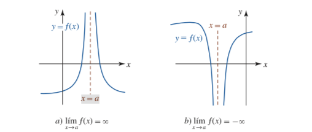
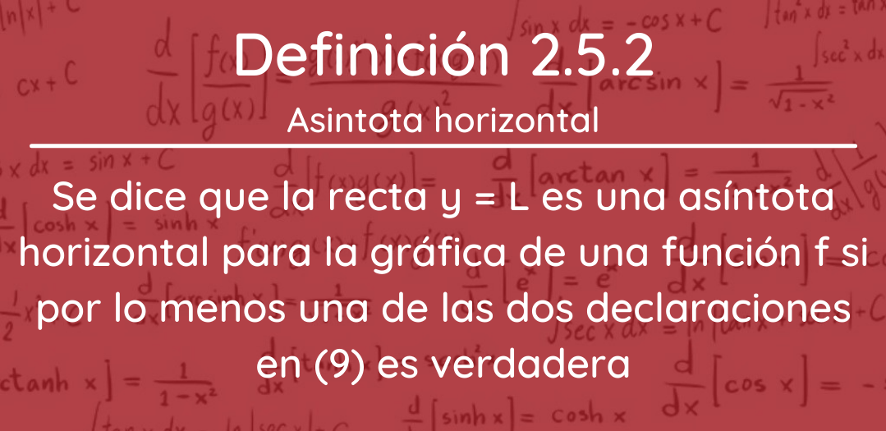

2.5 Límites que involucran el infinito
Un límite al infinito es aquel al que tiende f(x) cuando la variable X se hace tan grande, tanto en positivo como en negativo, como queramos. Entonces la función f(x) puede tender a un valor finito o puede diverger a infinito.
2.5.1 Límites en eL infinito
Donde, lim es la manera abreviada de escribir límite, x → a se lee “cuando X tiende al valor a en la función”, es decir, cuando la variable X toma valores muy cercanos al valor a y L es el resultado del límite.
